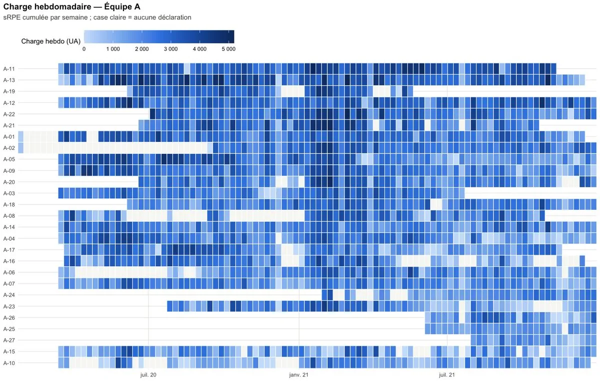
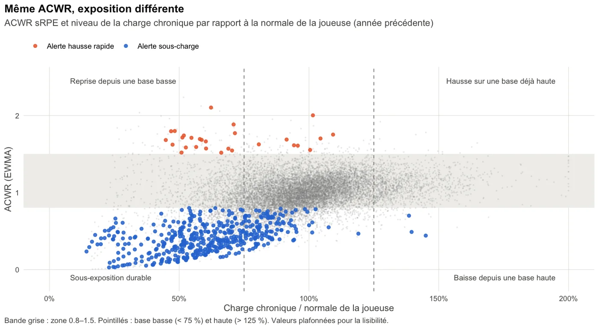
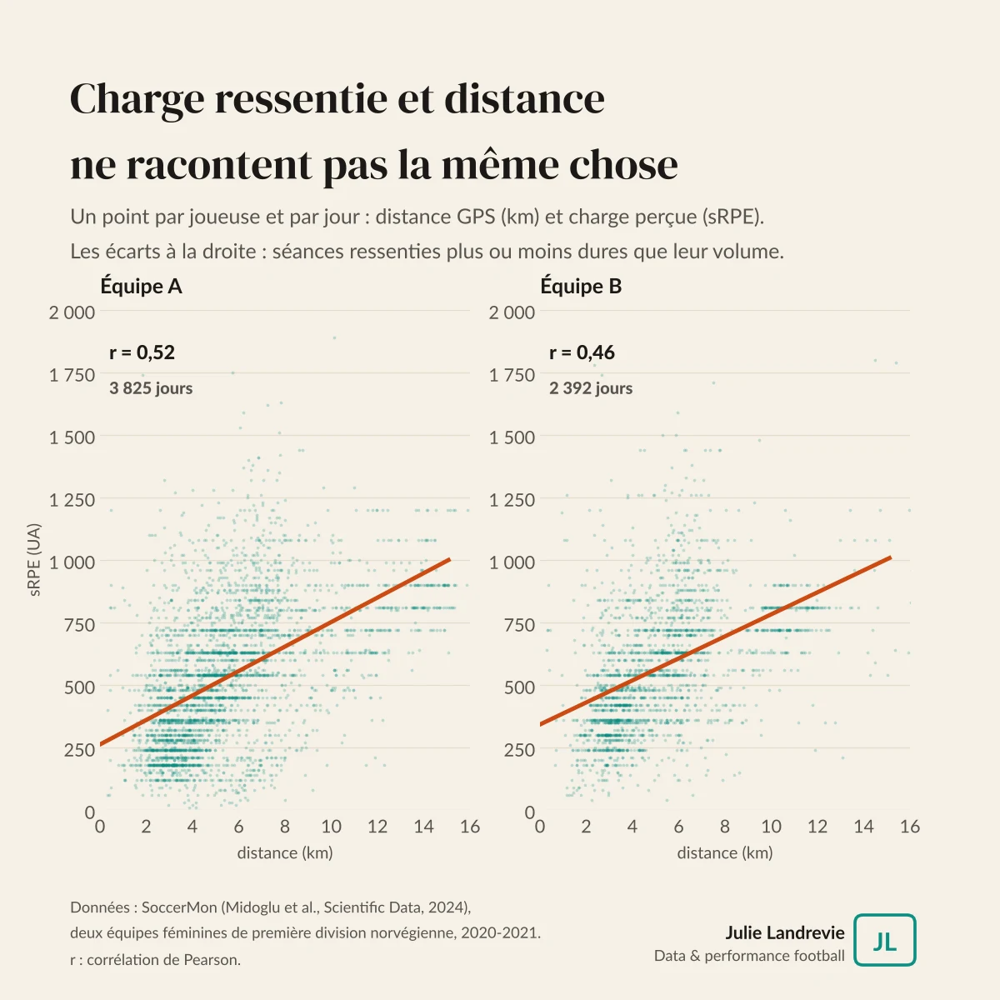
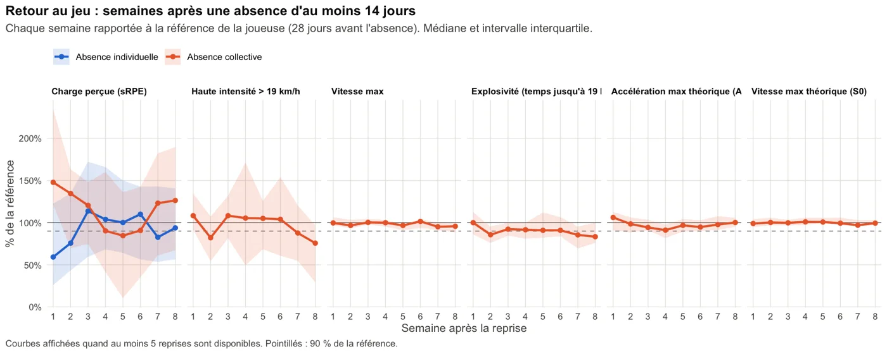
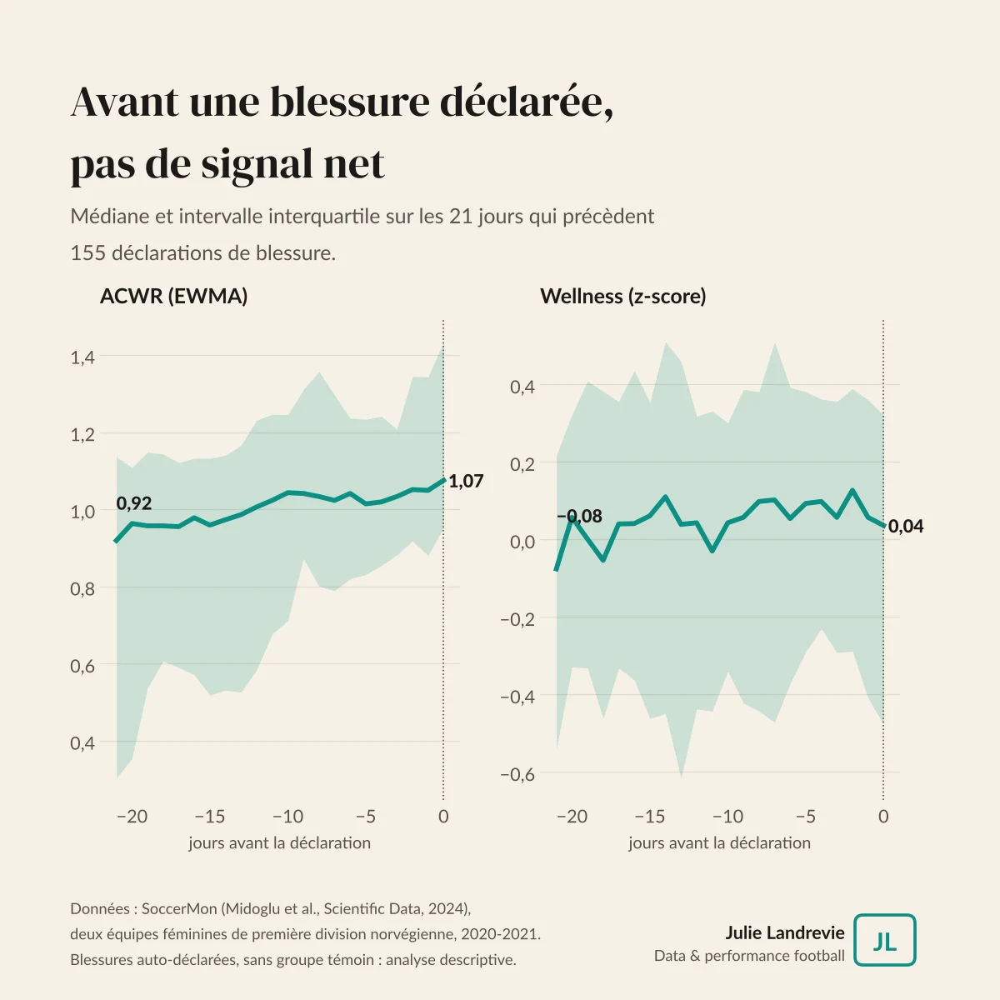

Suivi de charge et de forme en football féminin d’éliteLoad and wellness monitoring in elite women’s football
Quelles joueuses s’écartent de leur charge habituelle, sans noyer le staff sous les alertes ?Which players are drifting from their usual load, without drowning the staff in alerts?
Lire l’étudeRead the study
Les donnéesThe data
SoccerMon (Midoglu et al., Scientific Data, 2024) : deux équipes norvégiennes de première division, saisons 2020 et 2021, 50 joueuses. Charge ressentie (sRPE), questionnaire de forme quotidien, blessures déclarées et 10 075 fichiers GPS STATSports à 10 Hz.
Première vérification, première surprise : un jour sans déclaration vaut 0 dans SoccerMon. Un repos et un questionnaire oublié se ressemblent. Le pipeline limite donc chaque joueuse à sa période active et n’émet aucune alerte sous 70 % de jours documentés sur 28 jours.
Deuxième surprise, dans le GPS : les fichiers bruts répétaient chaque mesure 10 fois. Sans correction, toutes les distances auraient été multipliées par 10.
SoccerMon (Midoglu et al., Scientific Data, 2024): two Norwegian top-division teams, 2020 and 2021 seasons, 50 players. Perceived load (sRPE), daily wellness questionnaire, reported injuries and 10,075 STATSports GPS files at 10 Hz.
First check, first surprise: a day without a report is coded 0 in SoccerMon. Rest and a missed questionnaire look the same. The pipeline therefore limits each player to her active period and raises no alert below 70% documented days over 28 days.
Second surprise, in the GPS: the raw files repeated every measurement 10 times. Without the fix, every distance would have been multiplied by 10.

Des alertes qu’un staff peut lireAlerts a staff can read
Appliqués tels quels, les seuils classiques signalaient près d’un jour sur cinq : une centaine de jours par joueuse sur deux saisons. Trois règles ajoutées l’une après l’autre ramènent ce volume à des signaux individuels :
1. Contexte de l’équipe : une joueuse n’est signalée que si elle sort de la zone alors que la médiane de son équipe y reste (écart d’au moins 0,2). 2. Persistance : 3 jours consécutifs hors zone. 3. Épisodes : des jours d’alerte consécutifs forment un seul signal.
Résultat : la part de jours en sous-charge passe de 13 % à 3 % (équipe A) et 2 % (équipe B). Il reste 13 à 16 épisodes par joueuse et par an, environ un toutes les trois à quatre semaines.
Applied as they are, the usual thresholds flagged almost one day in five: about a hundred days per player over two seasons. Three rules added one after the other bring this down to individual signals:
1. Team context: a player is flagged only if she leaves the zone while her team’s median stays in it (gap of at least 0.2). 2. Persistence: 3 consecutive days out of range. 3. Episodes: consecutive alert days form a single signal.
Result: underload days drop from 13% to 3% (team A) and 2% (team B). 13 to 16 episodes per player per year remain, about one every three to four weeks.


Ce que le GPS ajouteWhat GPS adds
Charge ressentie et distance GPS sont liées, mais modérément (corrélation de 0,52 et 0,46 selon l’équipe) : la même distance peut être vécue très différemment.
Dans 92 % des pics de course à haute intensité, l’ACWR calculé sur la charge ressentie reste sous le seuil : la sRPE seule rate ces pics. D’où un ACWR GPS calculé à côté.
Un module « retour au jeu » suit, semaine par semaine après une absence d’au moins 14 jours, chaque indicateur rapporté à la référence de la joueuse avant l’absence.
Perceived load and GPS distance are related, but only moderately (correlation of 0.52 and 0.46 depending on the team): the same distance can feel very different.
In 92% of high-speed running peaks, the ACWR based on perceived load stays below the threshold: sRPE alone misses these peaks, hence a GPS-based ACWR alongside.
A return-to-play module tracks, week by week after an absence of at least 14 days, each indicator relative to the player’s pre-absence reference.


Une piste de recherche, sans conclusion forcéeA research lead, without a forced conclusion
Sur 155 blessures déclarées, l’ACWR médian monte à peine dans les 21 jours précédents (environ 0,95 → 1,07) et le wellness ne baisse pas. Dans ces données, le questionnaire n’anticipe pas les blessures déclarées : je le publie tel quel.
Across 155 reported injuries, the median ACWR barely rises in the 21 days before (about 0.95 → 1.07) and wellness does not drop. In this data, the questionnaire does not anticipate reported injuries: I publish it as it is.

Blessures auto-déclarées et pas de groupe témoin : la piste avant blessure reste descriptive. L’ACWR est débattu dans la littérature : il sert ici de repère de progressivité, pas de prédicteur.
Self-reported injuries and no control group: the pre-injury analysis stays descriptive. The ACWR is debated in the literature: it is used here as a progression guide, not a predictor.